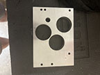
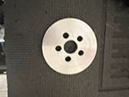
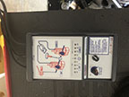
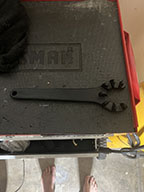
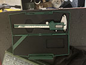
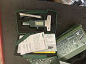
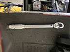
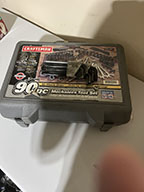

| This tool is used to measure distance between the top of the transmission box and the top of the bearings/gears so you can properly apply shims to the transmission |
 |
This tool is used to apply the rear seal gasket behind the flywheel. The holes in the center are for the flywheel mounting bolts, which are used to apply pressure to the rear seal. |
 |
| This tool is used to balance your carburetors on each side. This should be used after all timing issues and engine compression issues are solved.This is a crucial step in getting your bike in running order. |
 |
This is used to remove the lugs on your exhaust. This tool will save you from destroying your lugs and throwing tools across your garage in frustration. |
 |
| This is a micrometer. This literaly measures into the micrometer range. It is a must for rebuilding engines and transmissions. |
 |
This is also a micrometer. This is for measuring depressions, which you cannot do with the other type of micrometer. |
 |
| This is a torque wrench. This is used to put an exact amount of torque on bolts so they don't fall off. The flywheel and the clutch both have stretchable bolts that need an exact torque. |
 |
This is a basic metric tool set, complete with socket and regular wrenches, including hex wrenches. If you have nothing else, you need this. |
 |